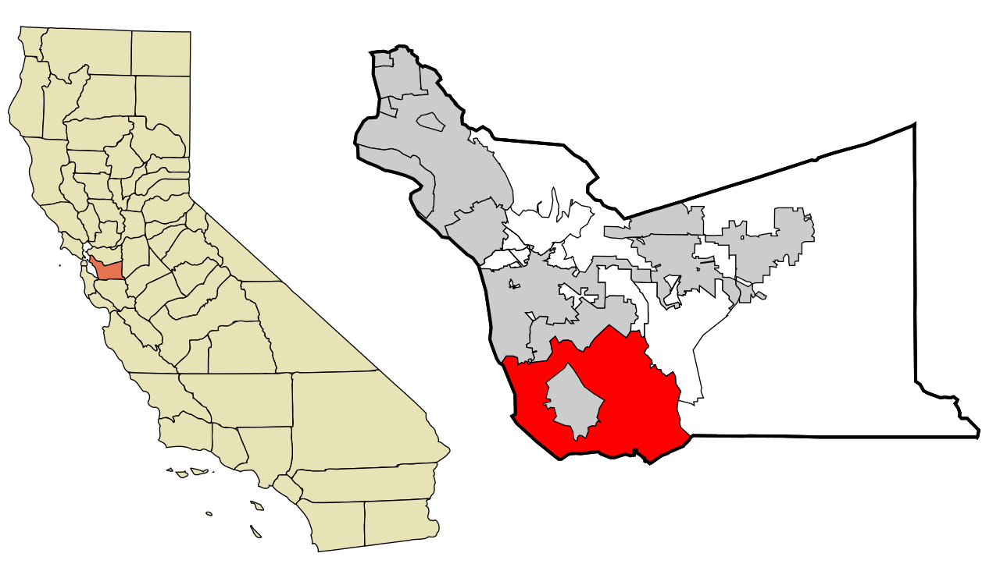
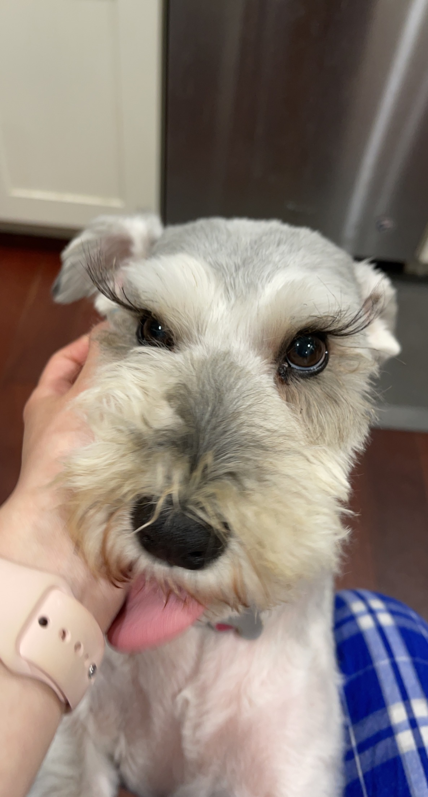

Hi, welcome to my page! Learn some facts about me by hovering over each image below!
My name is Grace, and I'm a college student attending the University of Michigan! I'm studying Business Administration within the Ross School of Business and minoring in User Experience (UX) Design within the School of Information.

I'm originally from Fremont, California, a suburb of San Francisco in the Bay Area! I was born in Maryland but moved to California when I was 2.

I have a little brother who's 5 years younger than me. I also have a miniature schnauzer named Sheriff, who's the inspiration for my website icon. I miss them a lot, as they're all the way across the family.